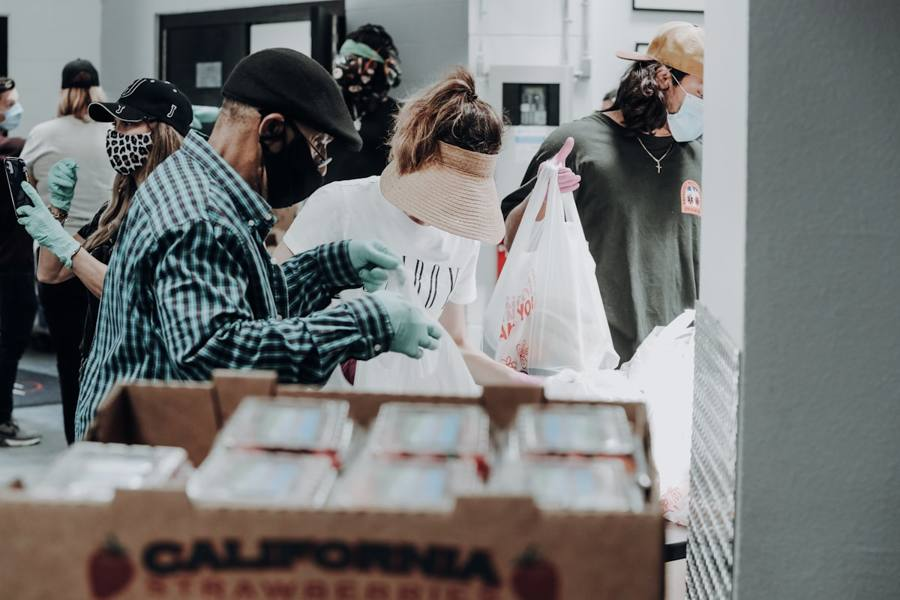
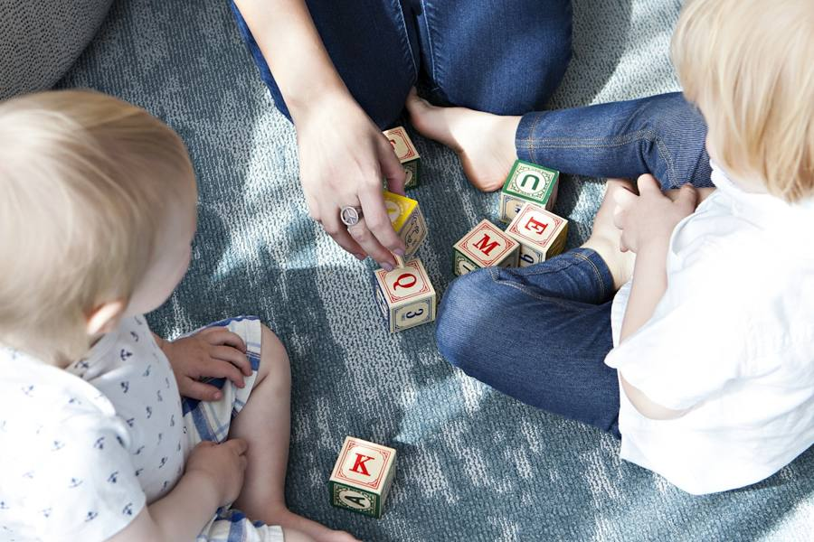
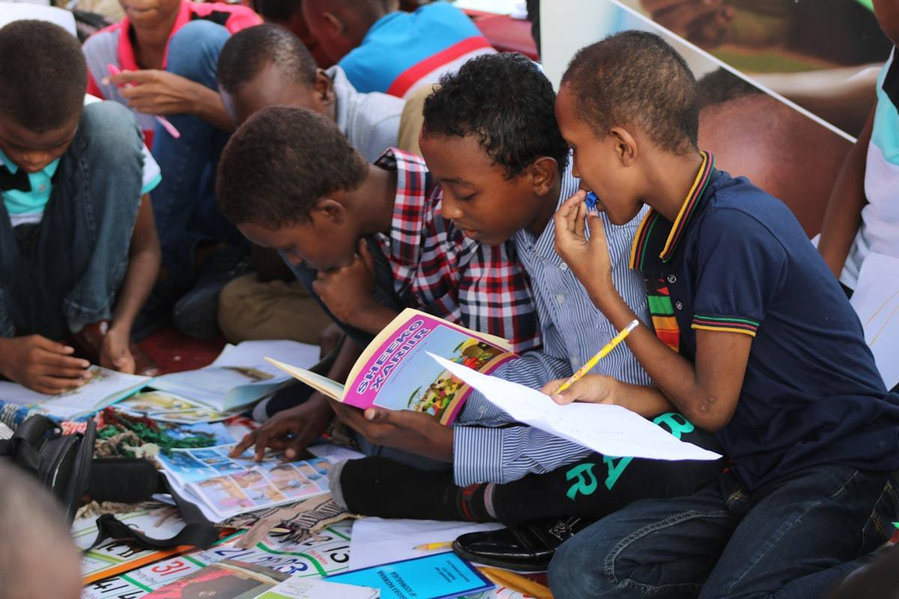

Ce qui nous anime
Notre Mission
Huit engagements concrets pour améliorer durablement la vie des familles de Côte d'Ivoire.

Aide humanitaire
Répondre présent quand l’urgence frappe
La Fondation intervient rapidement auprès des populations touchées par les crises.
- Intervention lors des catastrophes naturelles
- Réponse aux urgences sanitaires
- Soutien lors des urgences sociales
Développement familial
Des lieux de vie pour grandir ensemble
Parce qu’une famille épanouie a besoin d’espaces pour apprendre, jouer et se retrouver.
- Création d’aires de jeux
- Ouverture de bibliothèques
- Centres culturels
- Centres sportifs

Santé
Protéger les mères et les enfants
La santé maternelle et infantile est au cœur de notre engagement quotidien.
- Lutte contre la mortalité infantile
- Accompagnement des femmes enceintes
- Développement de maternités de proximité
Enfance
Célébrons les enfants, célébrons la vie
Des journées dédiées pour rappeler que la famille est le socle d’une société équilibrée.
- Journées « La famille, socle d’une société équilibrée »
- Journées « Célébrons les enfants, célébrons la vie »
- Activités éducatives et festives pour les plus jeunes


Éducation
Ouvrir les portes du savoir à chacun
L’éducation est la clé la plus sûre vers l’autonomie et la dignité.
- Foyers de jeunes filles
- Centres pédagogiques
- Formations professionnelles
- Sensibilisation à la scolarisation
Autonomisation des femmes
Quand les femmes avancent, tout le pays avance
Nous soutenons l’indépendance économique des femmes, moteur du développement.
- Coopératives agricoles
- Microfinance
- Entrepreneuriat féminin


Environnement
Prendre soin de la terre qui nous nourrit
Un développement durable pour transmettre aux enfants une nature préservée.
- Plantations d’arbres
- Recyclage
- Agriculture écologique
- Villages propres

Coopération
Plus forts ensemble
La Fondation collabore avec toutes les organisations poursuivant des objectifs similaires afin d’améliorer durablement les conditions de vie des populations.